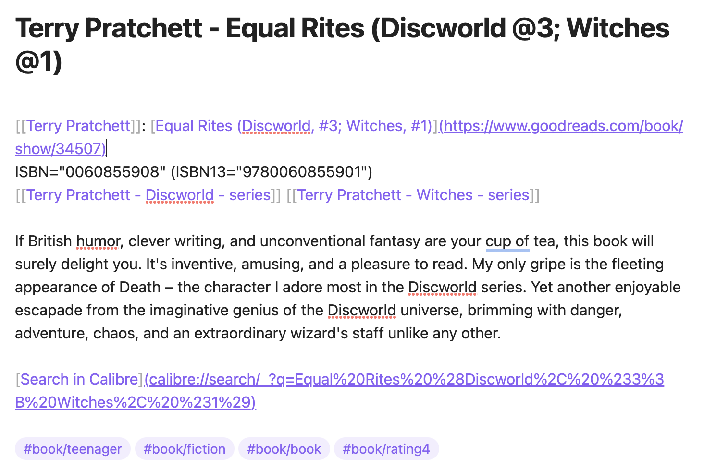

Экспорт Goodreads в markdown файлы
Преобразуйте ваши рецензии на книги из Goodreads в markdown файлы, идеально подходящие для Obsidian и других приложениях на основе markdown.
- Ссылки на страницы книг в Goodreads: Каждый markdown файл содержит прямую ссылку на соответствующую страницу книги на Goodreads.
- Интеграция с Calibre: Включает URL Search in Calibre для каждой книги, позволяя быстро искать в вашей локальной коллекции Calibre.
- Теги на основе полок Goodreads: Рецензии автоматически категоризируются с тегами, полученными из ваших полок Goodreads.
- Настраиваемые шаблоны: Используя шаблоны Jinja2, формат вывода можно легко настроить в соответствии с вашими потребностями или предпочтениями.
Пример рецензии на книгу в Obsidian

Пример автора книги в Obsidian

Пример серии книг в Obsidian

Установка
Установите с помощью pipx, что предотвращает конфликты с системными пакетами Python:
brew install pipx
pipx ensurepath
python3 -m pip install --user pipx
python3 -m pipx ensurepath
# Если вы установили python через app-store, замените `python` на `python3` в следующей строке.
python -m pip install --user pipx
После настройки pipx установите goodreads-export:
pipx install goodreads-export
Как создать файл экспорта Goodreads
Это приложение использует CSV файл, сгенерированный с goodreads.com. Чтобы создать ваш экспорт Goodreads, следуйте инструкциям на Goodreads Book Export.
Несмотря на объявления в 2022 году об удалении этой функции к августу 2020 года, функция экспорта все еще работала по состоянию на конец 2025 года.
Изначально я разработал это приложение как одноразовое решение для миграции моих 700+ рецензий на книги из Goodreads. Однако, поскольку функция экспорта остается функциональной, я теперь использую ее для инкрементального обновления моих markdown файлов в Obsidian.
Зачем использовать файл, экспортированный вручную?
С 2020 года Goodreads прекратил выдачу новых API ключей.
Я не могу полностью автоматизировать процесс из-за необходимости вручную экспортировать файл, но в целом процесс практически автоматический.
Инкрементальные обновления, объединение авторов
Приложение поддерживает добавление рецензий в папку с существующими файлами. Оно читает существующие файлы и избегает создания дубликатов, используя ID книг Goodreads, встроенные в ссылки markdown файлов на страницы Goodreads.
Важно: Для поддержания целостности данных не удаляйте и не изменяйте эти ссылки Goodreads. Приложение использует эти ссылки, а не имена файлов, для идентификации книг.
Файлы авторов
Ссылки внутри файлов служат идентификаторами авторов и не должны изменяться. Имя автора берется из ссылки внутри каждого файла, а не из имени файла.
Объединение разных имен авторов
Goodreads может иметь различные варианты написания или языковые версии имени автора. Это приложение позволяет объединять их в один "основной" файл автора.
- Объедините все имена авторов, скопировав их ссылки в один основной файл автора.
- Убедитесь, что первая ссылка в этом файле является "основным" именем автора.
- Чтобы объединить имена авторов без импорта новых данных из Goodreads, используйте опцию
merge. Это выполнит только объединение имен авторов, устраняя необходимость указывать файл экспорта Goodreads.
Интерфейс командной строки
goodreads-export --help

goodreads-export import --help

Если скрипт выполняется в директории, содержащей файл экспорта Goodreads (goodreads_library_export.csv)
без каких-либо параметров, следующим образом:
goodreads-export import .
Эта команда создаст подпапки в текущей директории: reviews, toread и authors,
каждая из которых будет заполнена соответствующими markdown файлами.
Альтернативно, вместо . вы можете указать путь к папке в вашем хранилище Obsidian, где организованы ваши книги,
и приложение обновит это местоположение.
Шаблоны
Это приложение использует шаблоны Jinja, которые вы можете настроить под свои предпочтения.
Создание и обновление шаблонов
Чтобы настроить шаблоны, используйте команду configure для создания вашей копии шаблонов в директории конфигурации приложения:
goodreads-export configure
Эта команда создает шаблоны в директории конфигурации приложения по умолчанию (платформо-зависимое местоположение). Затем вы можете изменить эти шаблоны.
Если вам хочется поместить шаблоны в другое место, используйте опцию --config или -c:
goodreads-export configure --config /path/to/config
Файлы шаблонов
Шаблоны включают:
author.jinjaдля генерации файлов авторов.book.jinjaдля создания файлов книг.series.jinjaдля файлов серий.regex.tomlсодержит указанные регулярные выражения для извлечения данных из этих файлов.
Безопасное обновление шаблонов
Команда configure интеллектуально обрабатывает обновления шаблонов:
- Неизмененные шаблоны: Автоматически обновляются, когда доступны новые версии.
- Измененные вами шаблоны: Новые версии сохраняются как файлы
.latest(например,book.jinja.latest) без перезаписи ваших настроек. - Принудительные обновления: Используйте
--forceили-fдля замены всех шаблонов, включая измененные.
Когда вы запускаете configure без указания встроенного набора шаблонов, он использует тот же набор, который использовался при первоначальном создании шаблонов.
Чтобы переключиться на другой встроенный набор шаблонов, используйте --force вместе с --builtin-name.
Использование пользовательских шаблонов
При запуске команд import, check или merge, если вы желаете использовать шаблоны не из стандартного места, укажите каталог, используя опцию --config или -c:
goodreads-export import . --config /path/to/config
Если не указано, приложение будет искать шаблоны в стандартном для конфигурации месте или использовать встроенные шаблоны (если вы не создавали свою копию с помощью команды configure).